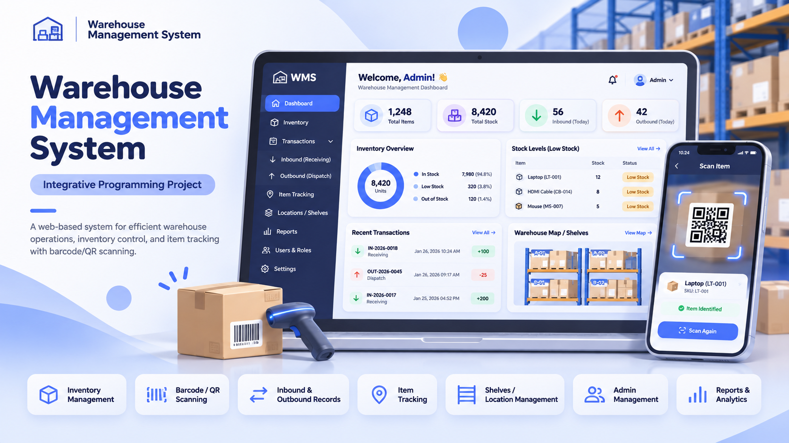

Aspiring IT Professional. Internship Applicant. Ready to Contribute.Daniel Matthew R. Desiderio
Aspiring SAP Analytics Consultant Intern
I'm Daniel Matthew R. Desiderio, an Information Technology student at STI College Dasmariñas building foundational skills in Java, Python, C#, SQL, and SAP S/4HANA. Through coursework and team projects, I practice developing solutions, sharing ideas, and working collaboratively. I'm seeking an IT internship where I can apply what I've learned, contribute to a team, and continue growing.
My technical foundation and real-world service experience shape how I learn, solve problems, and work with people.
I am a Bachelor of Science in Information Technology student at STI College Dasmariñas with foundational skills in Java, Python, C#, and SQL. My SAP S/4HANA training using the Global Bike case introduced me to connected business processes across five key modules.
Through customer service and patient support, I have developed communication, teamwork, and attention to detail. I aim to apply my technical knowledge, contribute to collaborative projects, and continue learning.
Career goal
To gain practical experience in an SAP analytics-related IT internship and build useful solutions with a professional team.
StudyingBachelor of Science in Information Technology, STI College Dasmariñas
Address730 Bariso Apt. General Yengco St. Bayan Luma 6, Imus City, Cavite
Applying forSAP Analytics Consultant Internship, SAP Philippines Inc.
LanguagesEnglish and Tagalog
My approachLearning → Building → Collaborating
{ }LearnUnderstand the fundamentals
→
</>BuildApply what I learn
→
↗CommunicateContribute with the team
Interests
Data analysis, software development, and connected business processes.
Competencies
Foundational programming, SQL, team communication, and problem-solving.
What I want to learn
Real-world SAP analytics workflows and collaborative IT project practices.
A school-based guidance and career support system designed to help learners access student guidance, book appointments, explore career support, and communicate within the school community.
Guidance and appointmentsCareer supportStudent communication

03 / INTEGRATIVE PROGRAMMINGTeam project
Warehouse Management System
A web-based system for warehouse operations, inventory control, and item tracking with barcode and QR scanning.
A healthcare support and clinic management system for patient records, appointments, care coordination, and communication between patients and providers.